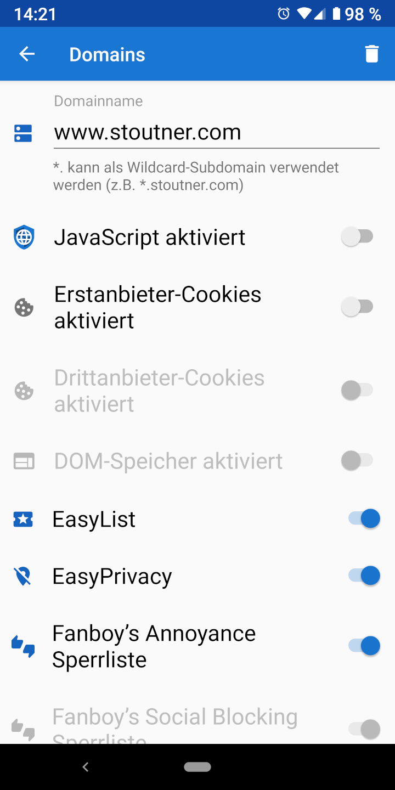

Secure Web Browsing Secure Web Browsing
Secure Web Browsing Secure Web BrowsingPrivacy Browser’s default is to browse with JavaScript, cookies, and DOM storage disabled. However, some websites legitimately need these features enabled to function correctly. Domain settings can automatically turn on a specified set of features when visiting a designated domain.
